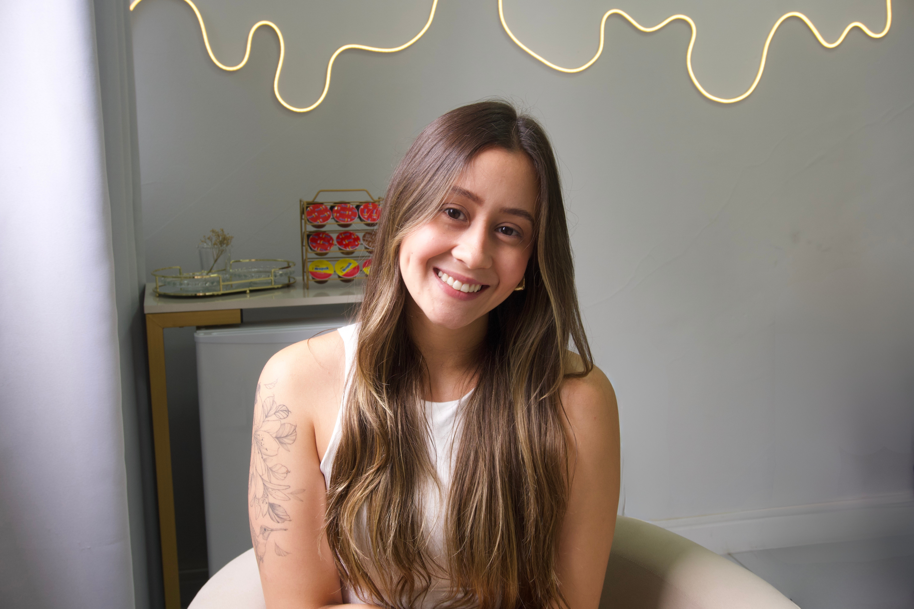
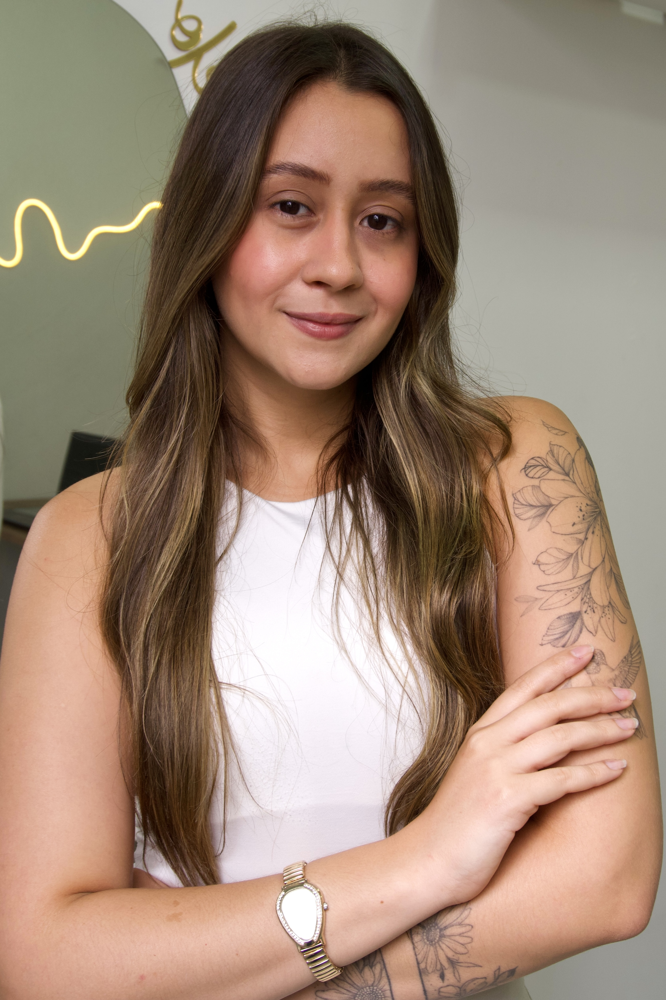

Aqui você encontra um espaço seguro para transformar sua relação com a comida, com apoio, orientação e acolhimento, buscando o equilíbrio entre saúde física e emocional.
Agendar minha consulta agoraVocê já tentou várias dietas e sempre volta ao peso inicial?
Se sente culpada depois de exagerar comendo o que gosta?
Vive uma guerra constante com a balança?
Nota que sentimentos do dia a dia afetam suas escolhas alimentares?
Cuida de todos ao seu redor, mas se coloca por último?
Sente que seu corpo não responde aos treinos?

São os pilares que guiam meu trabalho para resultados duradouros.
Sei que pode ser frustrante não conseguir os resultados que você busca, sempre voltando ao ponto de partida. Muitas vezes, isso acontece porque emoções do dia a dia também influenciam nossa alimentação, mesmo sem percebermos. Durante nossas consultas, crio um processo totalmente personalizado para sua realidade.
Por isso trabalho de forma diferente. Como nutricionista comportamental, trago uma metodologia que une ciência e acolhimento para você desenvolver uma relação saudável com a comida, vencer a compulsão alimentar e alcançar o bem-estar de forma realista e sustentável.
Primeira consulta é dedicada para entender sua trajetória e criar uma base sólida para resultados reais.
Plano personalizado que equilibra seu estilo de vida com as mudanças essenciais para sua saúde.
Acompanhamento ajustável e constante, com suporte em cada etapa da transformação.
Autonomia, saúde e leveza duradouras, sem dependência de dietas restritivas.
Trabalho com todos os aspectos que influenciam sua alimentação, desde emoções evidentes até sensações cotidianas como frustração e improdutividade.
Cuidado integral para cada fase da sua vida, considerando aspectos hormonais e necessidades específicas femininas.
Performance, energia e recuperação ideais para quem pratica atividade física, do iniciante ao atleta.
"Desde a nossa primeira consulta eu já senti que estava no caminho certo. Ela foi super atenciosa, me ouviu com calma e me deixou super à vontade. Me senti acolhida de verdade. Minha alimentação mudou bastante desde então, de um jeito super leve, sem neura. E o melhor: por não ser uma dieta restritiva, tô conseguindo seguir direitinho (milagre? Não! Só uma nutri que entende a vida real mesmo). Hoje me sinto mais equilibrada, com mais energia e, principalmente, feliz por estar cuidando de mim de um jeito real e totalmente sustentável."
"Minha experiência foi simplesmente incrível! Eu estava cheia de receio de procurar ajuda, mas logo na primeira consulta me senti super à vontade e acolhida. Aos poucos comecei a ver mudanças de verdade no meu corpo e até na minha autoestima. O acompanhamento é leve, humano e cheio de dicas que realmente funcionam. Foi um passo que mudou tudo pra mim, e sou muito grata por ter tomado essa decisão."
"Estou feliz demais em fazer parte de time que é tão bem cuidado por você!! Estou amando cada evolução, é tão satisfatório voltar a se amar olhando no espelho cada definição, cada músculozinho rsrs. Ver as pessoas comentando sobre o meu corpo, como estou evoluindo, é satisfatório demais! Eu nunca deixo de falar sobre quem tem sido meu suporte nesse processo, o quanto seu acompanhamento tem sido primordial pra mim!"
"Eu nunca consegui ter acompanhamento nutricional por mais de 2 meses seguidos, eu desistia e ia em outra nutri, todas me jogavam no chão pq eu estava gorda por que eu queria. Estou a meses acompanhando com a Letícia e ela me trouxe um olhar diferente da vida e da alimentação, acolheu minhas dificuldades junto comigo e seguimos tentando melhorar cada uma delas, agradeço pelo seu trabalho e empatia, não conseguiria emagrecer com a constância que tenho hoje sem o seu trabalho."
"Quero deixar registrado aqui o quanto sou grata por todo o cuidado e atenção nesse processo. Perdi 7kg, mas ganhei muito mais do que isso: qualidade de vida. Melhorei meu sono, estou mais ativa, focada, cheia de energia… e o melhor: me senti bem em cada etapa. Nada forçado, nada sofrido. Fui acolhida de verdade, respeitou meu ritmo e fez tudo parecer leve."
"A forma como fui acolhida, com tanto respeito e cuidado, fez toda a diferença. Não foi só sobre alimentação, foi sobre olhar pra mim como um todo. Ela me ajudou em momentos que nem eram só sobre comida e eu sou muito grata por isso. O consultório tem um clima tão leve e seguro que me senti confortável desde o início. Adoro como a Letícia se importa e realmente quer ver nosso bem."
"Conhecer a Letícia foi mais do que conhecer uma nutricionista, foi poder me olhar no espelho novamente, e decidir acreditar que eu poderia reconquistar minha autoestima com seu apoio. Cada consulta envolve sempre o respeito, aos meus limites e desejos. Eu sempre consigo sair de lá com vontade de começar de novo e de corrigir meus erros. Em nenhum momento ela veio com fórmulas mágicas, querendo me medicar ou me diagnosticar, ela apenas me tratou como um ser humano que vive muitos processos ao mesmo tempo, e isso tem me ajudado a me entender melhor."
A nutrição comportamental vai além das calorias e macronutrientes. Trabalhamos com padrões alimentares e gatilhos emocionais, tanto os óbvios quanto as sensações cotidianas que nem sempre percebemos no momento.
Os primeiros resultados comportamentais aparecem nas primeiras semanas. Mudanças físicas e de bem-estar começam a ser notadas entre 4-8 semanas, mas cada pessoa tem seu ritmo único.
Sim! O atendimento online mantém a mesma qualidade do presencial. Utilizamos ferramentas digitais que permitem acompanhamento completo e personalizado, independente da distância.
Atendo desde iniciantes na atividade física até atletas de alto rendimento. Minha especialização em nutrição esportiva permite adaptar as estratégias para qualquer nível de atividade.
O acompanhamento é personalizado e inclui consultas regulares, ajustes no plano conforme sua evolução, suporte via WhatsApp e materiais educativos para sua autonomia alimentar.
Não! Meu trabalho é sobre equilíbrio e liberdade alimentar. Ensinamos como incluir os alimentos que você gosta de forma consciente e prazerosa, sem culpa.
R. Piratininga, 914 - Sobreloja 02
Zona 01, Maringá - PR
Atendimento para todo Brasil com mesma qualidade e acompanhamento personalizado
Escolha o que melhor se adapta à sua rotina e necessidades
Vamos construir juntas um caminho de equilíbrio, liberdade e leveza alimentar
Agendar minha primeira consulta